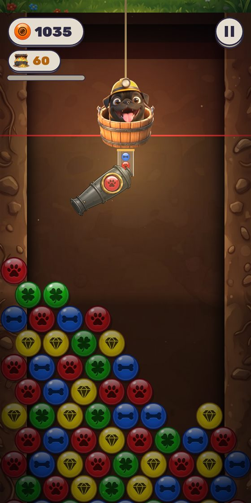
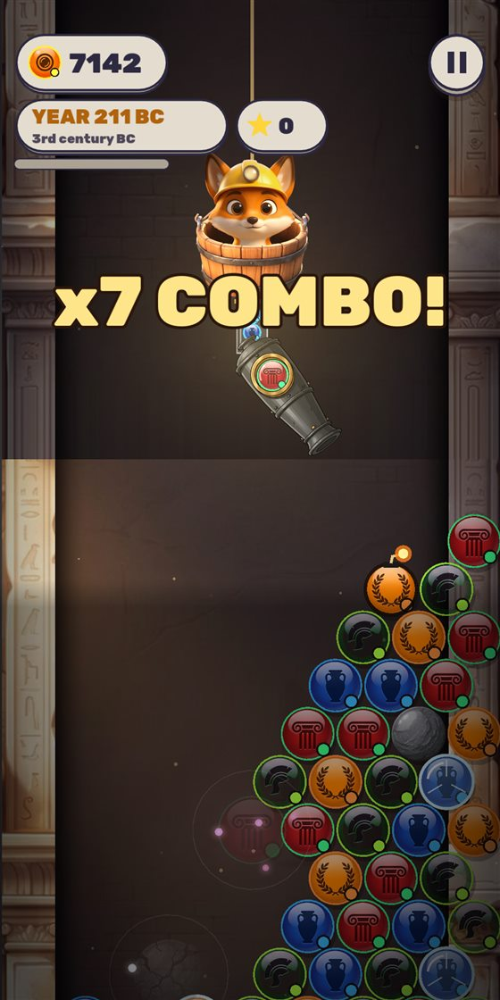

Offline bubble shooter
 Works offline
Works offline
Dig down.Find it all.
Shoot bubbles, dig through 50 eras and find treasure with Bigi, the pug in the mining helmet.
Works offlinePo polsku: Pug Bubble Dig to bubble shooter offline z mopsem Bigim. Strzelaj kulkami, kop w głąb 50 epok i zbieraj skarby.
 POP!COMBO!50 eras
POP!COMBO!50 erasLevel 01 · Play
Shoot, match, drop.
Aim, pop bubbles and clear the way. Chain combos for a bigger pay-off.

Level 02 · Journey
Travel through the eras.
Dig deeper through 50 eras, one century after another.

Level 03 · Race
Race for the treasure.
Dig down to the treasure chest. Mole attacks included.

Level 04 · Museum
Every find goes in the museum.
Collect the pieces from each century, from pocket watches to the Taj Mahal, and fill the shelves one era at a time.
1300–1900 and beyondCollect all piecesCharacters to meet
 Found it!
Found it!See Bigi at work.
Hit play on the trailer and watch the dig.
Ready to dig?